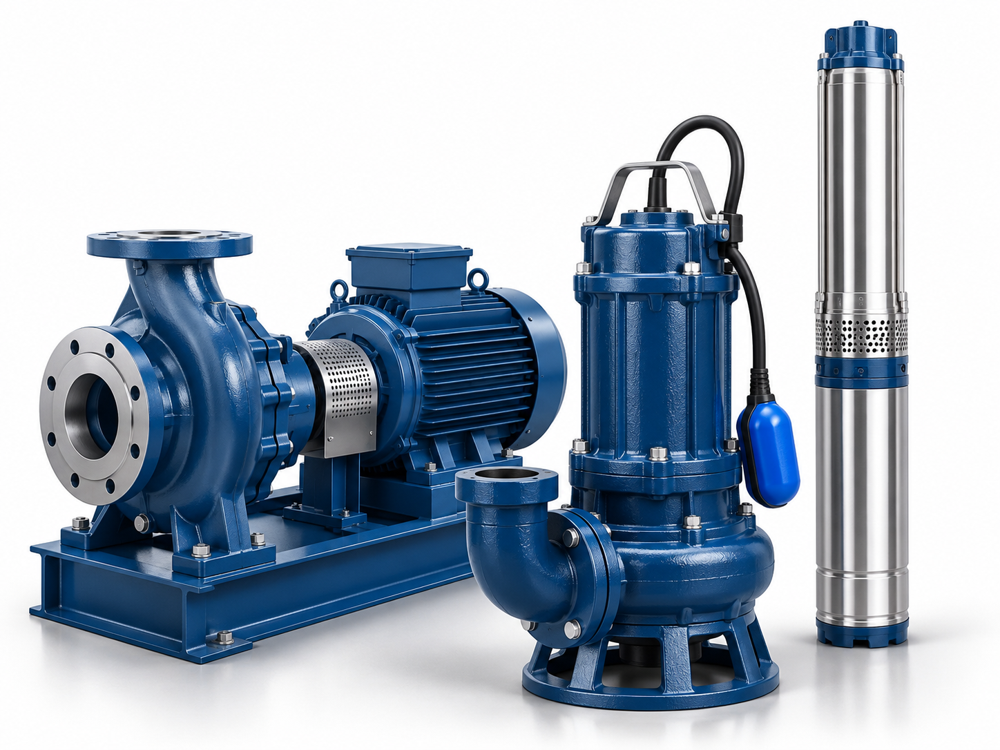
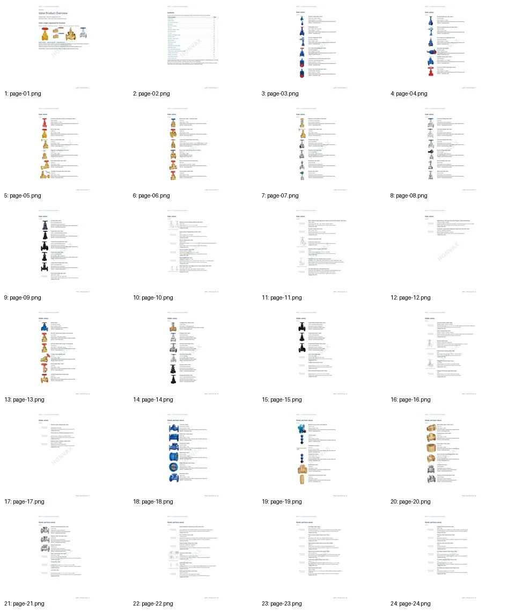
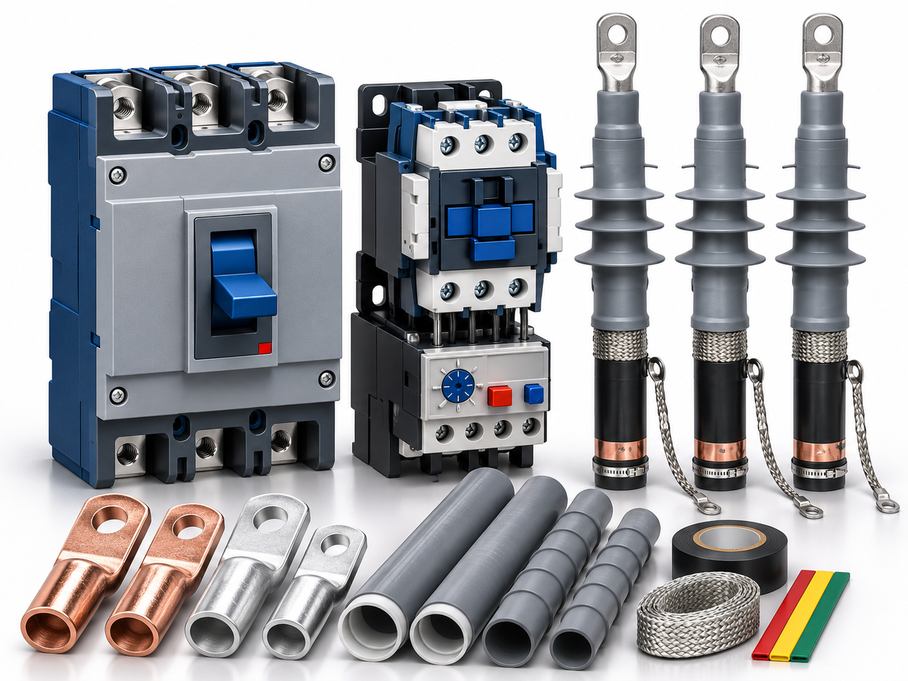
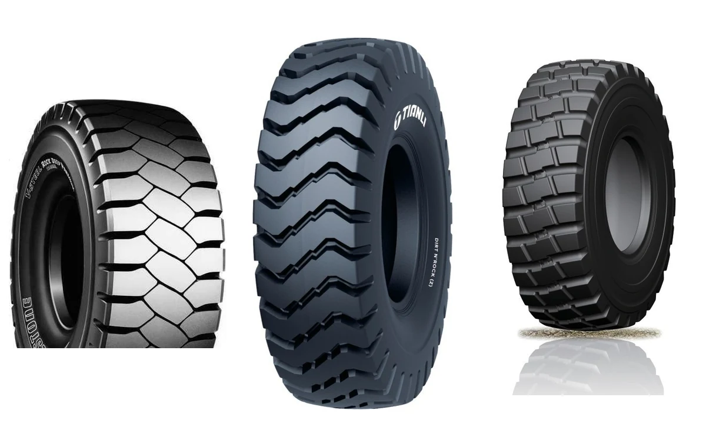
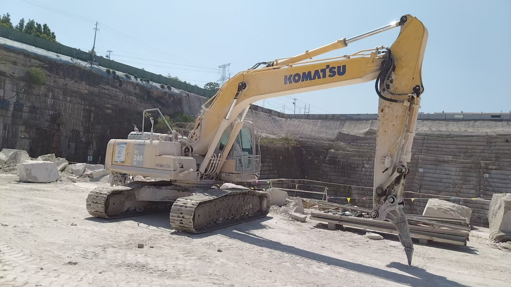
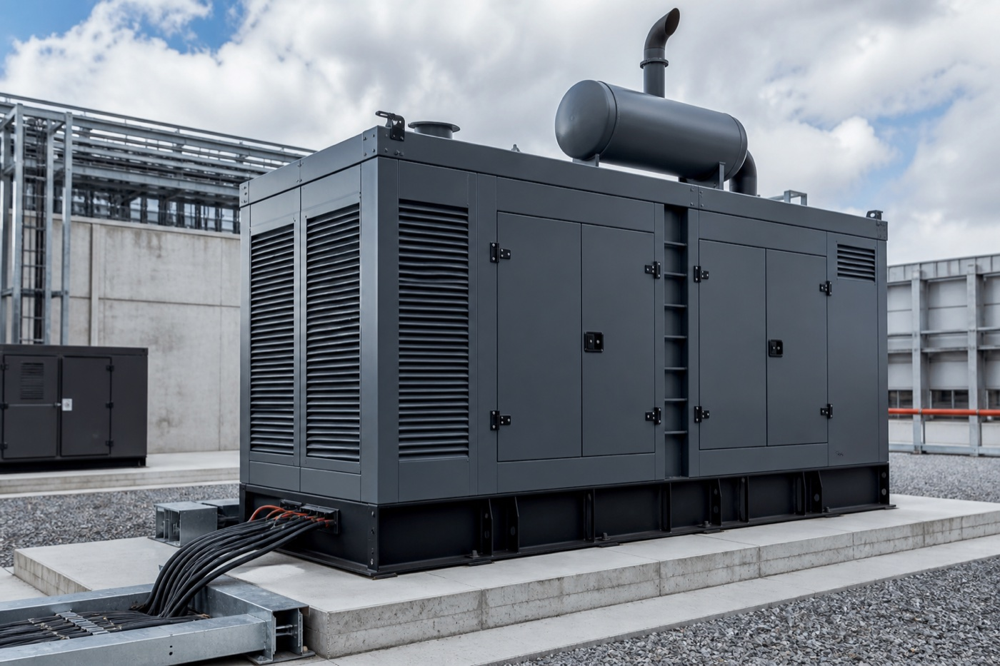
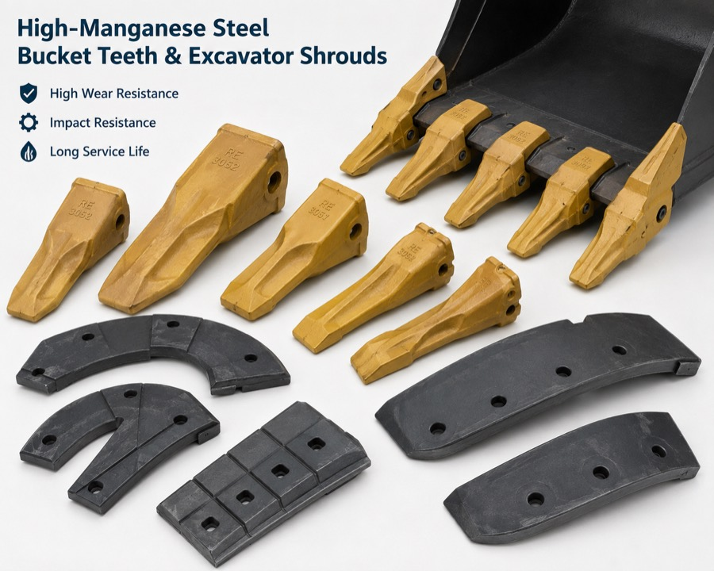

Pumps
Water-supply, circulation, submersible sewage and deep-well pump ranges, together with selected motors and controllers.
Browse selected pump, valve, electrical component and off-the-road tyre ranges using concise English product catalogues. Detailed technical data, drawings and model confirmation are provided against a specific RFQ when required.
Each concise overview combines selected product ranges for one product group. The images are taken from the completed HONVAX English catalogues and use original supplier product photographs, not generic equipment illustrations.

Water-supply, circulation, submersible sewage and deep-well pump ranges, together with selected motors and controllers.

Waterworks, building-services, process-pipework and selected industrial valve ranges organised by valve function and construction.

Medium- and low-voltage switching, photovoltaic protection, isolation and transfer switching, motor control and monitoring components.

Selected OTR tyre ranges for mining, quarrying, earthmoving and construction machinery, including rigid dump trucks, loaders, wide-body trucks and graders.
The cards below are organised by product type rather than manufacturer. Use them to identify the relevant product family and start an RFQ. Brand, manufacturer, technical data and exact model are confirmed during the enquiry process.
Single-stage centrifugal, building-service, circulation and related pump families for defined flow, head and service conditions.
Submersible sewage and wastewater pump ranges for project, municipal and industrial duty.
Deep-well clean-water pumps, submersible screw pumps, matching motors and controller ranges.
Core isolation, shutoff and non-return valve families across water, building-services and industrial applications.
Valve families for isolation, flow regulation, pressure control and automated pipeline operation.
Selected special-duty valve constructions and pipeline accessories for defined media, pressure, temperature and project requirements.
Medium-voltage switching and protection components for distribution networks and industrial electrical systems.
Low-voltage protection, photovoltaic circuit protection, isolation and transfer-switching product families.
Motor control and protection, surge protection, reactive-power compensation, measurement and monitoring components.
Selected off-the-road tyre patterns for high-load mining and haulage duty, subject to machine, load, speed and cycle confirmation.
Selected tyre patterns for loaders, quarry equipment, earthmoving machinery and graders under abrasive, mixed or soft-ground conditions.
Mining-rim enquiries require machine model, tyre size, rim profile or drawing, axle load, speed, inflation pressure, bolt pattern, offset and centre bore.
The website publishes integrated product overview catalogues for preliminary range identification only. The product finder above is organised by product type, not by manufacturer. Detailed technical data, drawings, certifications, manufacturer and order-specific confirmation are provided during the RFQ process when relevant.
The product catalogue section adds pumps, valves, electrical components and off-the-road tyres without removing the other enquiry routes already available on the HONVAX website.

Excavators and selected used construction equipment, subject to model, condition and current availability.
View equipment →
Industrial generator sets, synchronising and project-specific control packages for defined duty and site conditions.
View generators →
Wear parts, screening products, cable accessories, fasteners and other specification-led engineering products.
View selected products →Send the product model, quantity, drawing, duty point, existing part reference or procurement list. The RFQ form can be opened directly from any product range above with the product context already filled in.